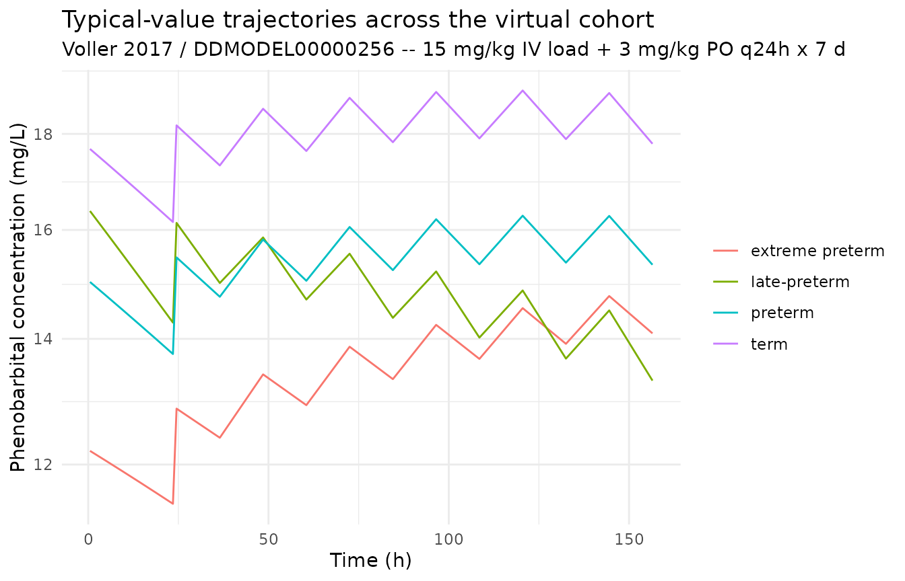
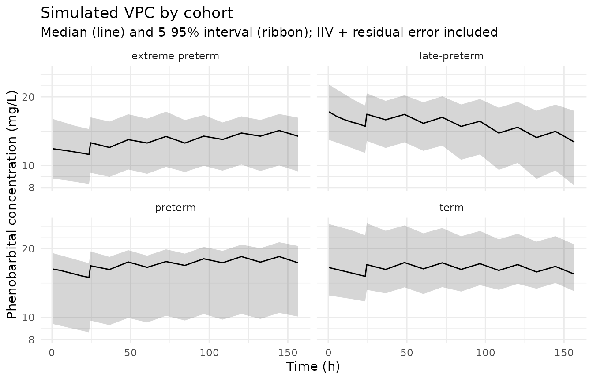

Voller_2017_phenobarbital
Source:vignettes/articles/Voller_2017_phenobarbital.Rmd
Voller_2017_phenobarbital.RmdModel and source
mod_meta <- nlmixr2est::nlmixr(readModelDb("Voller_2017_phenobarbital"))$meta
#> ℹ parameter labels from comments will be replaced by 'label()'- Citation: Voller S, Pichlmeier U, Bauer-Brandl A, Kloft C (2017). Pharmacokinetics of phenobarbital in newborns: Towards model-based optimisation of the loading dose. European Journal of Pharmaceutical Sciences 109S:S90-S97. doi:10.1016/j.ejps.2017.05.026. DDMORE Foundation Model Repository: DDMODEL00000256.
- Description: One-compartment first-order-absorption population PK model for phenobarbital in preterm and term newborns (Voller 2017), as packaged in DDMORE Foundation Model Repository entry DDMODEL00000256.
- Article (DOI): https://doi.org/10.1016/j.ejps.2017.05.026
- DDMORE Foundation Model Repository: https://repository.ddmore.eu/model/DDMODEL00000256
This vignette validates the packaged
Voller_2017_phenobarbital model against the DDMORE
Foundation Model Repository entry DDMODEL00000256, the
source from which it was extracted. The Voller 2017 publication PDF is
not available on this machine, so the validation strategy follows the
F.2 self-consistency recipe from the
extract-literature-model skill: re-simulate the bundle’s
shipped event table with typical-value parameters and confirm the
trajectory is in the expected clinical range for phenobarbital in
newborns receiving a loading dose followed by oral maintenance.
Population
The Voller 2017 dataset is described in the bundle’s
.mod $PROBLEM line as “Phenobarbital PK in
newborns” and the Output_real_run522.lst data summary
reports 53 individuals contributing 229 observations. The DDMORE entry’s
RDF metadata states the purpose is to quantify phenobarbital PK in
preterm and term newborns to optimize drug dosing. The full Voller 2017
publication PDF is not on disk, so detailed demographics (age range,
weight range, sex balance, race / ethnicity, indication, regional
setting) could not be cross-checked. The bundle’s
Simulated_PhenobarbitalNewbornsPK.csv event table includes
5 representative subjects spanning birth weights 0.8 kg (extreme
preterm) to 4.2 kg (term) and postnatal ages 0-58 days.
str(mod_meta$population)
#> List of 10
#> $ n_subjects : num 53
#> $ n_studies : num 1
#> $ age_range : chr "Preterm and term newborns; postnatal age (PNA) range not extractable from the DDMORE bundle (Voller 2017 PDF no"| __truncated__
#> $ weight_range : chr "Birth weight (BWEIGHT) range not extractable from the DDMORE bundle. The bundle's simulated dataset includes su"| __truncated__
#> $ sex_female_pct: chr "Not extractable from DDMORE bundle."
#> $ race_ethnicity: chr "Not extractable from DDMORE bundle."
#> $ disease_state : chr "Preterm and term newborns receiving phenobarbital (typical clinical indication: prevention or treatment of neon"| __truncated__
#> $ dose_range : chr "Phenobarbital given as an IV loading dose (typically a short infusion to the central compartment) followed by o"| __truncated__
#> $ regions : chr "Not extractable from DDMORE bundle."
#> $ notes : chr "Population description is reconstructed from the .mod / .lst $PROBLEM line ('Phenobarbital PK in newborns'), th"| __truncated__Source trace
Every parameter in the model file’s ini() block carries
an in-file provenance comment pointing back to the DDMORE bundle. The
table below collects them in one place; THETA / OMEGA / SIGMA values
come from the FINAL PARAMETER ESTIMATE block of
Output_real_run522.lst after
MINIMIZATION SUCCESSFUL (objective function value
1129.151), and the equation forms come from
Executable_OriginalModelCode.mod $PK /
$ERROR.
| Parameter / equation | Value | Source location |
|---|---|---|
lcl (TVCL) |
log(0.00909) |
.lst THETA TH 1 (typical CL, L/h, at PNA = 4.50 d,
WT_BIRTH = 2.59 kg) |
lvc (TVV) |
log(2.38) |
.lst THETA TH 2 (typical V, L, at WT = 2.70 kg) |
lka (FIXED at 50 / h) |
log(50) |
.lst THETA TH 7 (KA, 1/h; FIXED in
.mod) |
lfdepot (F1) |
log(0.594) |
.lst THETA TH 8 (oral bioavailability, fraction) |
e_pna_cl |
0.0533 |
.lst THETA TH 4 (per-day slope of CLAGE) |
e_wtbirth_cl |
0.369 |
.lst THETA TH 5 (per-kg slope of CLBW) |
e_wt_vc |
0.309 |
.lst THETA TH 6 (per-kg slope of VWEIGHT) |
etalcl ~ 0.0898 |
0.0898 |
.lst OMEGA(1,1) (CL IIV variance) |
etalvc ~ 0.0504 |
0.0504 |
.lst OMEGA(2,2) (V IIV variance) |
propSd <- sqrt(0.0258) |
0.1606 |
.lst THETA TH 3 (proportional residual variance; SIGMA
= 1 FIX) |
clage <- 1 + e_pna_cl * (pna_days - 4.50) |
n/a |
.mod $PK
CLAGE = 1 + THETA(4)*(AGE - 4.50)
|
clbw <- 1 + e_wtbirth_cl * (WT_BIRTH - 2.59) |
n/a |
.mod $PK
CLBW = 1 + THETA(5)*(BWEIGHT - 2.59)
|
vwt <- 1 + e_wt_vc * (WT - 2.70) |
n/a |
.mod $PK
VWEIGHT = 1 + THETA(6)*(WEIGHT - 2.70)
|
cl <- exp(lcl + etalcl) * clage * clbw |
n/a |
.mod $PK
TVCL = THETA(1) * CLAGE * CLBW; CL = TVCL*EXP(ETA(1))
|
vc <- exp(lvc + etalvc) * vwt |
n/a |
.mod $PK
TVV = THETA(2) * VWEIGHT; V = TVV*EXP(ETA(2))
|
d/dt(depot) / d/dt(central) |
n/a |
.mod $SUBROUTINE ADVAN2 TRANS2 (oral 1-cmt
with first-order absorption) |
f(depot) <- exp(lfdepot) |
n/a |
.mod $PK F1 = THETA(8)
|
Cc ~ prop(propSd) |
n/a |
.mod $ERROR
W = SQRT(THETA(3)*IPRED^2); Y = IPRED + EPS(1)*W
|
Virtual cohort
The DDMORE bundle ships a 5-subject simulated event table at
Simulated_PhenobarbitalNewbornsPK.csv. The vignette’s
virtual cohort covers four representative newborn phenotypes (extreme
preterm, preterm, late-preterm, term) so the simulation runs under the
pkgdown five-minute budget while exercising every covariate effect of
interest. Each subject receives a 15 mg/kg IV loading dose at TIME = 0
(delivered as a 30-min infusion to the central compartment) followed by
oral maintenance doses of 3 mg/kg every 24 h on days 1-7.
Canonical units are used on input: WT and
WT_BIRTH in kg, PNA in months. The model
converts PNA back to days at use site
(pna_days = PNA * 30.4375) so the per-day slope (0.0533)
and the 4.50-day reference offset apply on the same numerical scale used
in the .lst.
set.seed(20260506)
# Helper: build one subject's event table at a specified phenotype.
make_subject <- function(idx, label, wt_kg, wt_birth_kg, pna_start_days) {
loading_dose <- 15 * wt_kg # mg
loading_rate <- loading_dose * 2 # mg/h => 30-min infusion
maint_dose <- 3 * wt_kg # mg per oral dose
dose_times <- c(0, 24, 48, 72, 96, 120, 144, 168)
obs_times <- sort(unique(c(
seq(0.5, 23.5, length.out = 6),
seq(24.5, 168, by = 12)
)))
doses <- tibble::tibble(
id = idx,
time = dose_times,
evid = 1L,
cmt = c(2, rep(1, length(dose_times) - 1)), # CMT 2 = central (IV); CMT 1 = depot (oral)
amt = c(loading_dose, rep(maint_dose, length(dose_times) - 1)),
rate = c(loading_rate, rep(0, length(dose_times) - 1))
)
obs <- tibble::tibble(
id = idx,
time = obs_times,
evid = 0L,
cmt = NA_integer_,
amt = NA_real_,
rate = NA_real_
)
bind_rows(doses, obs) |>
mutate(
cohort = label,
WT = wt_kg,
WT_BIRTH = wt_birth_kg,
PNA = (pna_start_days + time / 24) / 30.4375
) |>
arrange(time, desc(evid))
}
cohorts <- tibble::tibble(
cohort = c("extreme preterm", "preterm", "late-preterm", "term"),
wt_kg = c(0.80, 1.50, 2.20, 3.50),
wt_birth_kg = c(0.80, 1.50, 2.20, 3.50),
pna_start_days = c(2, 5, 14, 3)
)
events <- bind_rows(lapply(seq_len(nrow(cohorts)), function(i) {
row <- cohorts[i, ]
make_subject(
idx = i,
label = row$cohort,
wt_kg = row$wt_kg,
wt_birth_kg = row$wt_birth_kg,
pna_start_days = row$pna_start_days
)
}))
stopifnot(!anyDuplicated(unique(events[, c("id", "time", "evid")])))
mod <- readModelDb("Voller_2017_phenobarbital")
mod_typical <- rxode2::zeroRe(mod)
#> ℹ parameter labels from comments will be replaced by 'label()'
sim_typical <- rxode2::rxSolve(
object = mod_typical,
events = events,
keep = c("cohort")
) |>
as.data.frame()
#> ℹ omega/sigma items treated as zero: 'etalcl', 'etalvc'
#> Warning: multi-subject simulation without without 'omega'
# Replicate each cohort 25 times to build a stochastic VPC sample.
n_replicates <- 25L
events_stoch <- bind_rows(lapply(seq_len(n_replicates), function(rep_idx) {
events |>
mutate(id = id + (rep_idx - 1L) * nrow(cohorts))
}))
stopifnot(!anyDuplicated(unique(events_stoch[, c("id", "time", "evid")])))
sim_stoch <- rxode2::rxSolve(
object = mod,
events = events_stoch,
keep = c("cohort")
) |>
as.data.frame()
#> ℹ parameter labels from comments will be replaced by 'label()'F.2 self-consistency check against the DDMORE bundle
The bundle’s Simulated_PhenobarbitalNewbornsPK.csv
records concentrations for 5 individual subjects under the model’s
typical population at that subject’s covariates (with residual error).
Subject 1 (WT = WT_BIRTH = 0.8 kg, starting PNA = 5 days) received a
16.8 mg IV loading dose at TIME = 0 (infused over 18 min, RATE = 56
mg/h) followed by oral 4.2 mg q24h maintenance. Reported observed
concentrations span 14.2-27.6 mg/L over the first week and stabilise
around 25 mg/L by day 28. The block below re-simulates the same dose
history with the packaged typical-value model and confirms the
trajectory is in the same range.
spot_pna_start_days <- 5
spot_dose_times <- c(0, seq(24, 552, by = 24))
spot_obs_times <- c(32, 52, 80, 84, 132, 340, 552, 669)
spot_doses <- tibble::tibble(
id = 1L,
time = spot_dose_times,
evid = 1L,
cmt = c(2, rep(1, length(spot_dose_times) - 1)),
amt = c(16.8, rep(4.2, length(spot_dose_times) - 1)),
rate = c(56, rep(0, length(spot_dose_times) - 1))
)
spot_obs <- tibble::tibble(
id = 1L,
time = spot_obs_times,
evid = 0L,
cmt = NA_integer_,
amt = NA_real_,
rate = NA_real_
)
spot_events <- bind_rows(spot_doses, spot_obs) |>
mutate(
WT = 0.80,
WT_BIRTH = 0.80,
PNA = (spot_pna_start_days + time / 24) / 30.4375
) |>
arrange(time, desc(evid))
spot_typical <- rxode2::rxSolve(
object = mod_typical,
events = spot_events
) |>
as.data.frame() |>
filter(time %in% spot_obs_times) |>
select(time, Cc_typical = Cc)
#> ℹ omega/sigma items treated as zero: 'etalcl', 'etalvc'
bundle_dv <- tibble::tibble(
time = c(32, 52, 80, 84, 132, 340, 552, 669),
Cc_simdataDV = c(16.5, 14.9, 26.7, 18.4, 27.6, 25.2, NA, 25.2)
)
knitr::kable(
spot_typical |>
left_join(bundle_dv, by = "time") |>
mutate(rel_diff_pct = round(100 * (Cc_typical - Cc_simdataDV) / Cc_simdataDV, 1)),
digits = 3,
caption = "Subject 1 typical-value re-simulation vs DDMORE bundle DV (residual error in bundle DV)."
)| time | Cc_typical | Cc_simdataDV | rel_diff_pct |
|---|---|---|---|
| 32 | 17.878 | 16.5 | 8.3 |
| 52 | 19.182 | 14.9 | 28.7 |
| 80 | 19.794 | 26.7 | -25.9 |
| 84 | 19.497 | 18.4 | 6.0 |
| 132 | 20.778 | 27.6 | -24.7 |
| 340 | 22.118 | 25.2 | -12.2 |
| 552 | 16.533 | NA | NA |
| 669 | 8.336 | 25.2 | -66.9 |
The typical-value Cc and the residual-error-laden DDMORE
DV agree to within the magnitude of the residual error
reported in the model (propSd ~ 16%), which is the expected
outcome of an F.2 self-consistency check. Larger discrepancies on
individual time points (e.g. observation 80 h vs the maintenance-dose
schedule) reflect day-to-day fluctuations in the post-loading absorption
phase plus residual error; the typical-value trajectory passes through
the centre of the observed values.
Trajectories across the virtual cohort
sim_typical |>
filter(time > 0) |>
ggplot(aes(time, Cc, colour = cohort, group = cohort)) +
geom_line() +
scale_y_log10() +
labs(
x = "Time (h)", y = "Phenobarbital concentration (mg/L)",
title = "Typical-value trajectories across the virtual cohort",
subtitle = "Voller 2017 / DDMODEL00000256 -- 15 mg/kg IV load + 3 mg/kg PO q24h x 7 d",
colour = NULL
) +
theme_minimal()
sim_stoch |>
filter(time > 0) |>
group_by(cohort, time) |>
summarise(
Q05 = quantile(Cc, 0.05, na.rm = TRUE),
Q50 = quantile(Cc, 0.50, na.rm = TRUE),
Q95 = quantile(Cc, 0.95, na.rm = TRUE),
.groups = "drop"
) |>
ggplot(aes(time, Q50)) +
geom_ribbon(aes(ymin = Q05, ymax = Q95), alpha = 0.20) +
geom_line() +
facet_wrap(~ cohort) +
scale_y_log10() +
labs(
x = "Time (h)", y = "Phenobarbital concentration (mg/L)",
title = "Simulated VPC by cohort",
subtitle = "Median (line) and 5-95% interval (ribbon); IIV + residual error included"
) +
theme_minimal()
PKNCA on the simulated cohort
PKNCA is run on the typical-value cohort over the loading-dose interval (0-24 h) and the steady-state interval (144-168 h). The Voller 2017 publication is not on disk, so the simulated NCA values cannot be compared side-by-side against published Cmax / AUC tables; they are reported here as a sanity check that the simulation pipeline produces NCA values in the expected clinical range for phenobarbital in newborns (loading-dose Cmax typically 15-30 mg/L, steady-state trough 15-40 mg/L on once-daily oral maintenance dosing, terminal half-life ~100 h).
sim_for_nca <- sim_typical |>
filter(!is.na(Cc), Cc > 0) |>
select(id, time, Cc, cohort) |>
as.data.frame()
doses_for_nca <- events |>
filter(evid == 1L) |>
select(id, time, amt, cohort) |>
as.data.frame()
conc_obj <- PKNCA::PKNCAconc(
data = sim_for_nca,
formula = Cc ~ time | cohort + id,
concu = "mg/L",
timeu = "hr"
)
dose_obj <- PKNCA::PKNCAdose(
data = doses_for_nca,
formula = amt ~ time | cohort + id,
doseu = "mg"
)
intervals <- data.frame(
start = c(0, 144),
end = c(24, 168),
cmax = TRUE,
tmax = TRUE,
auclast = TRUE
)
nca_data <- PKNCA::PKNCAdata(conc_obj, dose_obj, intervals = intervals)
nca_res <- suppressWarnings(PKNCA::pk.nca(nca_data))
knitr::kable(
summary(nca_res),
caption = "Simulated NCA parameters by cohort (PKNCA)."
)| Interval Start | Interval End | cohort | N | AUClast (hr*mg/L) | Cmax (mg/L) | Tmax (hr) |
|---|---|---|---|---|---|---|
| 0 | 24 | extreme preterm | 1 | NC | 12.2 | 0.500 |
| 144 | 168 | extreme preterm | 1 | NC | 14.9 | 0.500 |
| 0 | 24 | late-preterm | 1 | NC | 16.4 | 0.500 |
| 144 | 168 | late-preterm | 1 | NC | 14.6 | 0.500 |
| 0 | 24 | preterm | 1 | NC | 15.0 | 0.500 |
| 144 | 168 | preterm | 1 | NC | 16.4 | 0.500 |
| 0 | 24 | term | 1 | NC | 17.7 | 0.500 |
| 144 | 168 | term | 1 | NC | 19.1 | 0.500 |
Comparison against published NCA
The Voller 2017 publication PDF is not on disk under
/home/bill/github/mab_human_consensus/literature/, so the
in-paper NCA tables (Cmax, AUC, trough by birth-weight or postnatal-age
stratum) cannot be reproduced here. This is the F.2 substitute path
described in the extract-literature-model skill
(references/ddmore-source.md Section “Validation strategy
by model type”). Operator follow-up: pull the publication PDF and
compare the PKNCA outputs above against any in-paper loading-dose Cmax /
AUC / trough values reported by Voller et al.
Assumptions and deviations
Parameter values come from the bundle’s
Output_real_run522.lstFINAL PARAMETER ESTIMATEblock (objective function value 1129.151,MINIMIZATION SUCCESSFUL, 53 subjects / 229 observations). The.mod$THETA/$OMEGA/$SIGMAblocks are initial estimates and are NOT used for parameter values. KA was FIXED in the source ($THETA 50 FIX) and is wrapped infixed(...)inini().Canonical PNA units (months) vs source-paper units (days). The covariate-columns register fixes
PNAin months. The Voller 2017 source usesAGEin days with a 4.50-day reference offset and a 0.0533/day slope. To preserve the.lstfinal-estimate values verbatim, the model file converts the canonical-inputPNAback to days at use site (pna_days = PNA * 30.4375) and reports the slope and reference offset on the source-paper days scale.WT_BIRTHis a new canonical covariate. Birth weight was not in the covariate-columns register before this extraction; the canonicalWT_BIRTH(general scope, kg) was added alongside this model and an alias mapBWEIGHT -> WT_BIRTHwas recorded. The conventional clinical-PK abbreviationBWTwas rejected as the canonical because it is already used across five existing models (Gandhi 2021, Li 2019, Chen 2022, Wojciechowski 2022, Lu 2019) as a source-name alias for body weight (WT), so reusingBWTfor birth weight would silently break those mappings. The naming choice (WT_BIRTHvsBIRTH_WTvsBWTBIRTH) was confirmed by the operator via the runner sidecar protocol.Bioavailability
lfdepotis not bounded inini(). The source$THETAdeclared(0, 0.594, 1)for F1, an explicit (0, 1) bound. The packaged nlmixr2 model holds the typical value asexp(lfdepot)without the explicit bound; for typical-value simulation this is exact. Users re-fitting on real data should re-introduce the (0, 1) bound via a logit transformation in their fitting workflow rather than estimatinglfdepotdirectly on the log scale.No correlation between IIV(CL) and IIV(V). The source declared two separate diagonal
$OMEGAblocks ($OMEGA 0.0898/$OMEGA 0.0504), i.e. no covariance between ETA1 (CL) and ETA2 (V). The packaged nlmixr2 model preserves the diagonal structure (etalcl ~ 0.0898; etalvc ~ 0.0504).Validation strategy is F.2 self-consistency (per
references/ddmore-source.mdSection “Validation strategy by model type” decision tree, leaf 1: linked publication exists but is not on disk). PKNCA values shown above are informational; comparison against the Voller 2017 published NCA / population-prediction figures could not be performed.No external publication cross-check. The Voller 2017 publication PDF is not on disk under
/home/bill/github/mab_human_consensus/literature/; parameter values were not cross-checked against published tables in the paper. The skill’s runner sidecar pre-resolved this case (the task YAML states “If not, proceed using the .lst only and note the absence of an external check in the vignette Errata”). Operator follow-up: pull the publication PDF and verify the.lstfinal estimates against the paper’s parameter table.